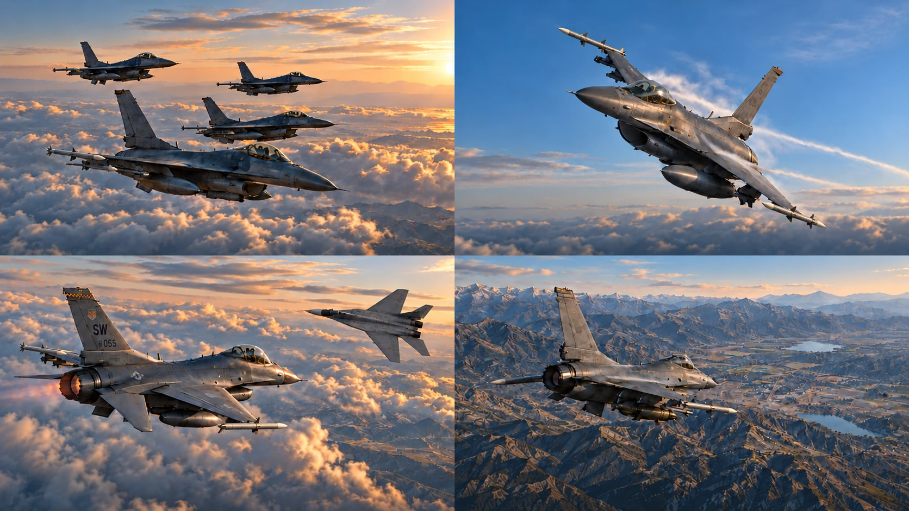

비행 시뮬레이션을 함께 즐기는 울프팩입니다.
기본 기동부터 공대공·공대지까지, 비행 준비와 연습에 필요한 도구를 한곳에 모았습니다. 각 메뉴에서 원하는 분야를 선택해보세요.
BMS·DCS 비행 시뮬레이션을 위한 도구입니다. 연결된 도구의 Preview·Work 및 모델 검증 상태는 각 페이지에서 확인하실 수 있습니다.
기본 비행과 기동을 위한 도구를 준비하고 있습니다.
연구 모델의 가정과 검증 범위는 해당 도구에서 확인해주세요.
대표 이미지는 디자인 시안을 바탕으로 생성한 이미지입니다.
Air to Air의 MiG-29A 형상은 Julian Herzog의 사진을 참조했습니다. 기체 크기·배경·색감이 변경된 파생 이미지입니다.
참고 사진 · Julian Herzog / Wikimedia Commons
Creative Commons Attribution 4.0
도구 바로가기: BDP · BOX · OFFSET · AIM-120B